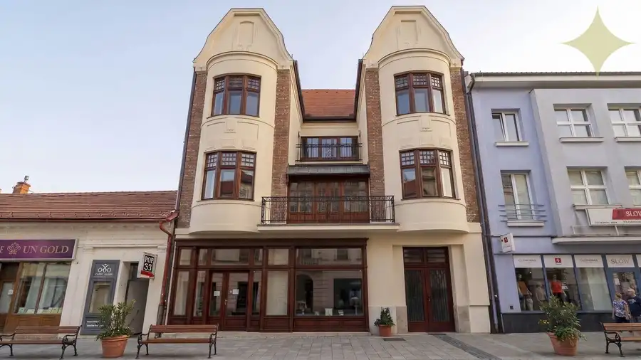
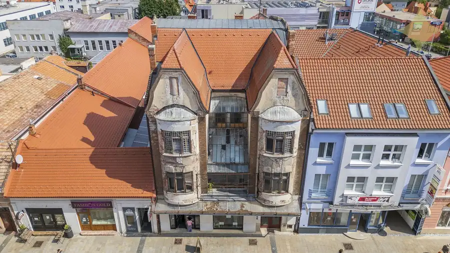
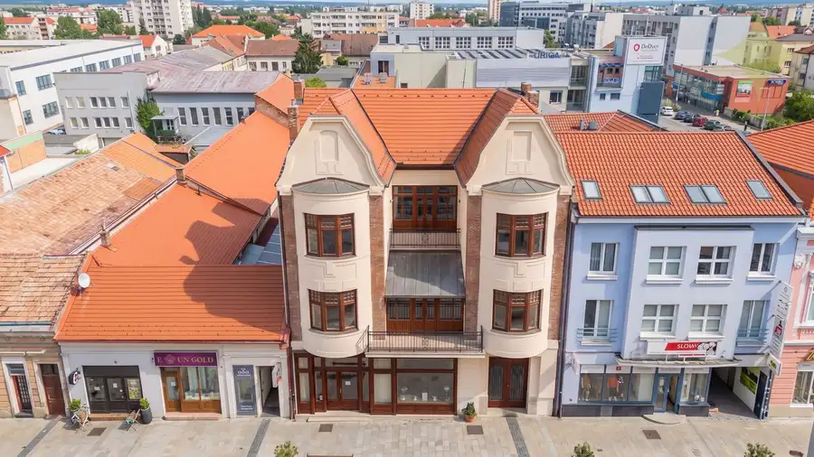
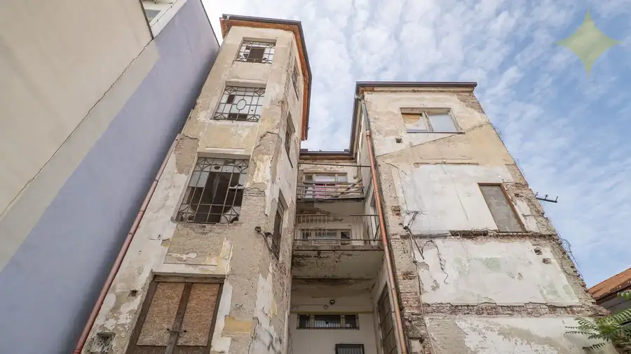
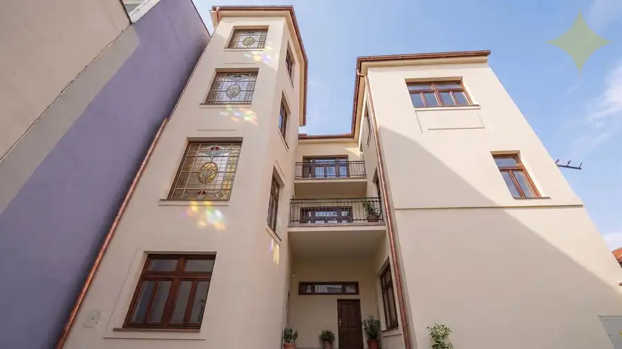
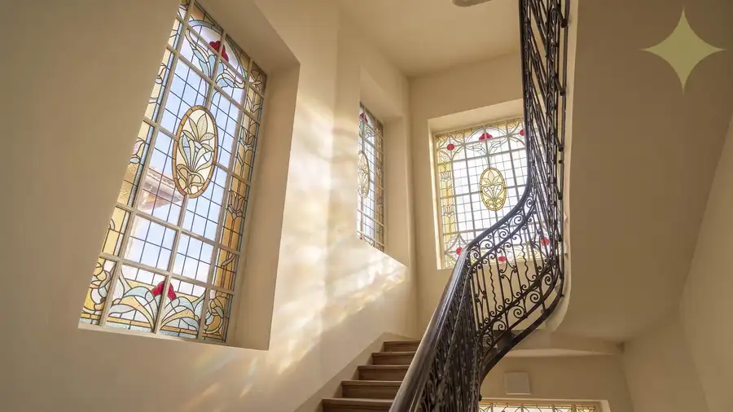
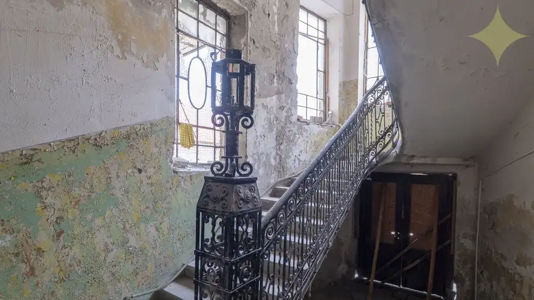
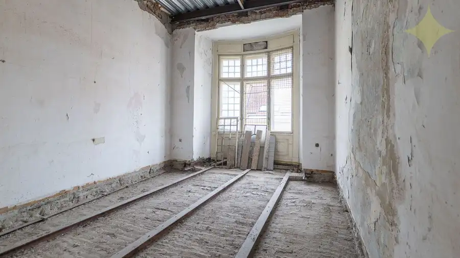

Historický Vežičkový dom v centre Nitry – príležitosť vrátiť život jednej z výrazných budov mesta
Nitra









- Plocha803 m²
- StavČiastočná rekonštrukcia
- VlastníctvoOsobné
O nehnuteľnosti
Niektoré nehnuteľnosti sa dajú opísať počtom miestností, výmerou a cenou za meter štvorcový. Pri tejto by to nestačilo.Na Štefánikovej triede, priamo v centre Nitry, stojí dom, ktorý je súčasťou mesta už viac ako 120 rokov. Vznikol v rokoch 1904 – 1905 ako reprezentatívna budova Nitrianskej ústrednej banky a dodnes si zachoval architektúru, vďaka ktorej ho Nitrania poznajú ako Vežičkový dom.Dnes hľadá nového vlastníka, ktorý v ňom neuvidí iba budovu čakajúcu na rekonštrukciu, ale spojenie histórie, bývania, obchodu a investície v centre Nitry.BUDOVA, KTORÁ BOLA SÚČASŤOU ŽIVOTA MESTADom pôvodne slúžil banke, neskôr tu pôsobila sporiteľňa a počas ďalších desaťročí sa jeho prízemie stalo miestom obchodov a služieb.Mnohí Nitrania si spomínajú najmä na niekdajšiu cukráreň. Tmavé parkety, červené koženkové boxy, pult so zákuskami, zmrzlina v antikorových pohároch, jahodový kokteil či jukebox. Nebola to iba ďalšia prevádzka v centre. Bolo to miesto, ktoré patrilo k mestu.A práve schopnosť domu znovu vytvoriť miesto, kam budú ľudia chcieť prísť, je jednou z jeho najväčších hodnôt.SÚČASNÝ STAVPredmetom predaja je historická budova – národná kultúrna pamiatka, pozostávajúca zo suterénu, troch nadzemných podlaží a podkrovia.Podlažná / úžitková plocha:1. PP – 165 / 125 m²1. NP – 246 / 195 m²2. NP – 239 / 168 m²3. NP – 227 / 168 m²Podkrovie – 223 / 147 m²Celková podlažná plocha je 1 100 m² a úžitková plocha 803 m².Prízemie ponúka komerčné priestory orientované do Štefánikovej triedy. Samostatný hlavný vstup na pravej strane fasády vedie na vyššie podlažia, ktoré boli v minulosti využívané aj na bývanie a ponúkajú priestor na budúce rezidenčné využitie.Strecha už prešla rekonštrukciou, čo pri objekte tohto rozsahu predstavuje významnú už realizovanú investíciu.POZEMKY A PRÍSTUPSúčasťou predaja sú tri parcely s celkovou výmerou 661 m²:parc. č. 1481/1 – 246 m² – parcela, na ktorej stojí historická budova,parc. č. 1481/2 – 161 m² – parcela vo vnútrobloku, kde sa v minulosti nachádzala dnes už odstránená časť zástavby,parc. č. 1481/3 – 254 m² – nadväzujúca parcela vo vnútrobloku.K nehnuteľnosti patrí aj spoluvlastnícky podiel 1/120 na parcele č. 1473, prostredníctvom ktorej je zabezpečený prístup smerom na Palárikovu ulicu.POTENCIÁL VNÚTROBLOKUHistorická zástavba pôvodne pokračovala do dvora. Táto časť bola v minulosti odstránená a práve tu je jedna z najzaujímavejších možností ďalšieho rozvoja.Súčasný vlastník si nechal vypracovať dokumentáciu pre územné rozhodnutie na obnovu, prestavbu a prístavbu polyfunkčného domu. Návrh pracuje nielen s obnovou historickej budovy, ale aj s novou dostavbou v mieste niekdajšej odstránenej časti zástavby.Navrhovaná dostavba predstavuje približne 866 m² podlažnej a 725 m² úžitkovej plochy.Práve tu sa mení pohľad na ekonomiku celej nehnuteľnosti. Investor nemusí uvažovať iba nad nákladmi na obnovu historickej budovy. Projekt ukazuje možnosť vytvorenia nových výnosových plôch, ktoré môžu byť významnou súčasťou ekonomiky celej investície.Návrh počíta s polyfunkčným využitím, bývaním, komerčnými priestormi a vnútorným dvorom s terasou a zeleňou – pokojným priestorom ukrytým priamo v centre mesta.Projektové riešenie nie je podmienkou predaja. Nový vlastník môže pokračovať v rozpracovanom zámere alebo pripraviť vlastnú koncepciu v medziach príslušných povolení a požiadaviek pamiatkovej ochrany.INVESTOR NEZAČÍNA S PRÁZDNYM PAPIEROMK nehnuteľnosti bola spracovaná rozsiahla odborná a projektová dokumentácia. K dispozícii je projekt obnovy, prestavby a prístavby polyfunkčného domu pre územné konanie vrátane pôdorysov, rezov, fasád, riešenia inžinierskych sietí a organizácie výstavby.Spracované bolo tiež expertízne posúdenie preslnenia a denného osvetlenia, projektové riešenie protipožiarnej bezpečnosti stavby a reštaurátorský výskum interiéru z roku 2024. Ten dokumentuje historické vrstvy objektu, zachované prvky, výsledky sond, technický stav a návrh spôsobu ich obnovy.Nový vlastník tak nepreberá iba historický dom, ale aj značné množstvo už vykonanej odbornej a projekčnej práce, z ktorej môže pri ďalšej príprave projektu vychádzať.NIE JE TO INVESTÍCIA PRE KAŽDÉHOBudova potrebuje komplexnú a finančne náročnú obnovu. Budúci vlastník musí počítať s požiadavkami pamiatkovej ochrany, povoľovacími procesmi, časom aj kapitálom potrebným na realizáciu.Na druhej strane kupuje historickú nehnuteľnosť na jednej z najvýraznejších adries centra Nitry, priestor pre ďalší rozvoj a pripravenú koncepciu jeho využitia.Podstatné je vrátiť tomuto miestu život a vytvoriť projekt s ekonomickou hodnotou aj vlastnou identitou.Vežičkový dom už jednu významnú kapitolu v histórii Nitry napísal. Teraz hľadá investora, ktorý dokáže napísať ďalšiu.Celková cena domu s pozemkami 735 000,- EURPre bližšie informácie a osobnú obhliadku ma neváhajte kontaktovať na tel. čísle 0903 425 347, Ing. Sklenár Martinmail: martin.sklenar@premiumliving.sk
Parametre
- Druh
- Historický objekt
- Dátum zverejnenia
- 23. 09. 2026
- Elektrina
- Na pozemku
- Energetický certifikát budovy
- nie je
- Odpadové vody
- Na pozemku - Kanalizácia
- Plocha pozemku
- 661 m²
- Plyn
- Na pozemku
- Počet nadzemných podlaží
- 4
- Počet podzemných podlaží
- 1
- Stav nehnuteľnosti
- Čiastočná rekonštrukcia
- Terén pozemku
- Iný
- Typ
- Predaj
- Typ konštrukcie
- Tehlová
- Vlastníctvo
- Osobné
- Voda
- Na pozemku
- Zastavaná plocha
- 246 m²
- Úžitková plocha
- 803 m²
Kde to je


Mohlo by Vás zaujímať
 BytNové
165 000 €3-izbový prerobený byt s loggiou | na Hôrke, Nitra – diely
Nitra
3-izbový61.4 m²2. podlažie
BytNové
165 000 €3-izbový prerobený byt s loggiou | na Hôrke, Nitra – diely
Nitra
3-izbový61.4 m²2. podlažie
 DomNové
147 000 €Rodinný dom s veľkým potenciálom | Vráble – Horný Ohaj | pozemok 1 251 m²
Vráble
205 m²
DomNové
147 000 €Rodinný dom s veľkým potenciálom | Vráble – Horný Ohaj | pozemok 1 251 m²
Vráble
205 m²
 DomNové
299 900 €Dvojgeneračný dom po rekonštrukcii interiéru s pekným pozemkom Golianova ul., Nitra - Čermáň
Nitra
204 m²
DomNové
299 900 €Dvojgeneračný dom po rekonštrukcii interiéru s pekným pozemkom Golianova ul., Nitra - Čermáň
Nitra
204 m²